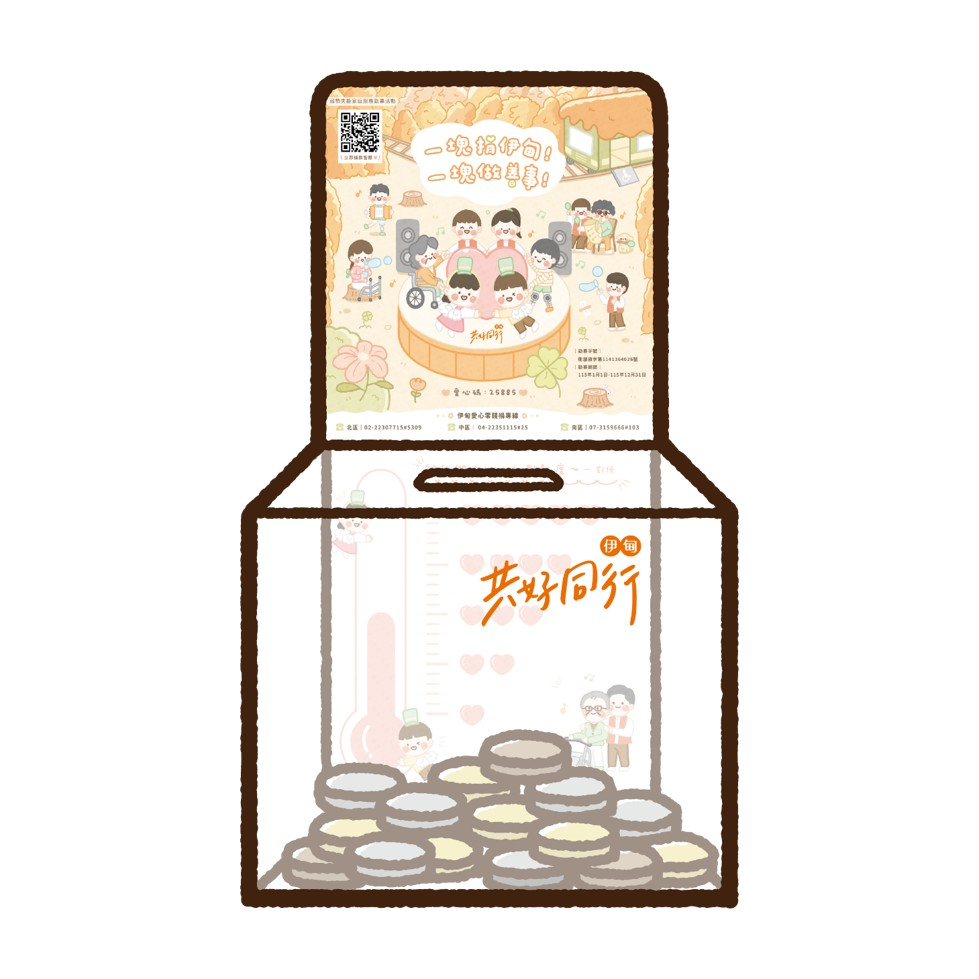

CONCEPT
有伊甸在的地方
溫暖的空間，承載著最純粹的善意。我們深信，只要有伊甸在的地方，就能透過貼心的陪伴與實質的在地關懷，串連起人與人之間的信任。讓美好的改變，在全台的各個角落靜靜發生。
STORE ACTION
全台門市設立專屬
全台門市設立專屬
公益小角落
將愛心融入日常的步調中。我們在全台灣的門市規劃了專屬的公益展示區，拉近顧客與社會關懷的距離。讓隨手付出的微小善意，都能匯聚成改變弱勢生命前行的巨大暖流。

▲ 原 PDF 提案書：實體零錢箱置放視覺示意